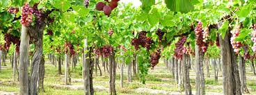

Nuestras Vids
Mendoza
Mendoza produce más del 78 % del vino argentino
La vitivinicultura genera más de 106.000 puestos de trabajo directos. El complejo vitivinícola es una de las 10 principales cadenas exportadoras del país.
Es protagonista en la industria del vino a escala nacional. Concentra más del 70% de la superficie implantada del país, supera el 68 % de la producción de uva, reúne más del 78 % en la elaboración del vino y más del 52% en mosto. También en tierra mendocina se ubican la mayoría de las bodegas de la Argentina.
De los 17.011 productores del territorio nacional, 10.974 se encuentran en Mendoza. El Observatorio Vitivinícola Argentino (OVA) y la Organización Internacional de la Viña y el Vino (OIV) indican que nuestro país es la 7ª superficie mundial -con 219 millones de hectáreas-, 5° productor -14,5 millones de hectolitros-, 9° consumidor mundial -8,4 millones de hectolitros- y además es el 10° exportador, con 2,8 millones.
La vitivinicultura genera más de 106.000 puestos de trabajo directos y 280.000 indirectos.
El complejo vitivinícola es una de las 10 principales cadenas exportadoras, junto son casi 500 exportadores que llegan con sus vinos a 127 países
FIESTA NACIONAL DE LA VENDIMIA
La Fiesta Nacional de la Vendimia es una de las festividades populares más importantes del planeta.
Reúne la cultura, la tradición y la vanguardia y, con los años, se ha convertido en uno de los principales atractivos turísticos de la provincia de Mendoza.
Durante 3 noches mágicas en el Teatro Griego Frank Romero Day. Es una ventana que nos muestra al mundo, con nuestra capacidad de crecer y el talento de nuestros referentes culturales.
Cada año, desde las viñas y las calles de nuestras ciudades, se renueva la esperanza de los hombres y mujeres de esta tierra, que, este año, vuelve como un Milagro del vino nuevo.
El guión que se desplegará este año es una poesía que fluye, emulando el agua y las otras fuerzas de la naturaleza.
Se expresa en múltiples voces como lo diverso y plural de la existencia. Es la voz de la vida y su devenir. Somos las partes pero somos una unidad. Nos hermana el hálito vital. El ser árbol, manos, sueños.
Somos viñas, sol de otoños y cosechas.
¡Cada día es un milagro!
Y la vida-milagro es arte, memoria, trabajo y fiesta.
Es la tierra que gira, la luz que canta y todo lo que danza. Es el vino de la esperanza, la alegría y la fiesta.
Nuestros héroes, el que con sus manos cultiva la tierra, la que sostiene los hijos, los que liberaron patrias, los y las que conquistan derechos, aprendieron de los ríos.
En ellos se miraron San Martín, Bolívar, Juana, Manuela… Y vos, el luchador de hoy.
Es correntada que no se fatiga.
Soy, somos,el júbilo y la adversidad. Soy, somos, todo lo que nos constituye.
Creemos que, en esta primera Vendimia del reencuentro, recibimos las miradas y las emociones como seres con conciencia de la finitud y buscando mitigar las ausencias con la afirmación de la vida.
Parte que vuelve a reunirse, a congregarse, a sumar nuevamente después de tanto espacio, tanto silencio y tanta distancia.
Este vino,esta gente y este brindis es lo que Mendoza puede ofrecer al mundo.
https://vendimia.mendoza.gov.ar/
San Juan

Dejate llevar por el incomparable sabor de los vinos sanjuaninos a través de un recorrido enoturístico que marida muy bien con los paisajes inigualables. La industria del vino en San Juan está muy desarrollada y podés disfrutarla en toda la Provincia.
Además de excelentes vinos, San Juan se destaca por la producción de uva de mesa y pasas. Y de esta actividad surgen expresiones artísticas e históricas que pueden apreciarse en galerías y museos.
¿Te animás a una degustación? Una amplia gama de varietales que producimos en nuestras bodegas te van a introducir en un mundo de sabores complejos y que enamoran. Conocé todo el proceso de elaboración desde la vid hasta la botella.
Podés realizar recorridos guiados por antiguas y modernas bodegas equipadas con maquinarias de última generación, tanques de acero inoxidable, refrigeración computarizada y barricas de roble.
Escuchá las mejores recomendaciones de la voz de reconocidos enólogos y combiná toda la experiencia con el mejor alojamiento y gastronomía que ofrecen algunas de las mejores bodegas ubicadas en la Ruta del Vino de San Juan.
Salta
Pocos lugares en el mundo sorprenden como esta Ruta del Vino. La variedad de colores en sus montañas, los pueblos típicos y la calidez de su gente transforman a este lugar en algo mágico. Atraviesa lugares con paisajes muy llamativos como los de la Quebrada de las Flechas, Quebrada de las Conchas y pueblos centenarios como Molinos, San Carlos, Seclantás y Cachi con una enorme riqueza cultural que se expresa en la música y las artesanías.
A través de la Ruta Nacional N°68 y la famosa Ruta Nacional N°40 se puede degustar los vinos más altos del mundo y probar las diferentes variedades que ofrecen las bodegas salteñas. Es la ruta del vino más alta del mundo, se encuentra en los Valles Calchaquíes y es el área de producción de vinos más importante de Salta. Presenta un clima seco y templado, óptimo para el cultivo y producción del Torrontés y otras cepas como el Cabernet Sauvignon, Malbec, Tannat, Bonarda, Syrah, Barbera y Tempranillo.
Las características geográfi¬cas y el clima le conceden al vino de la zona un gran carácter, fuerte personalidad y alta calidad con fragancias, coloridos y sabores únicos, siendo por esto reconocidos y premiados a nivel mundial. A través de esta ruta y todas sus bodegas puede conocerse, apreciarse y degustarse todas las cualidades del vino de altura.
En la actualidad se exportan desde la provincia de Salta 1.200.000 botellas de vinos premium a 30 países de todo el mundo por lo que actualmente Salta es uno de los destinos preferidos de la Argentina en enoturismo. Modernas bodegas equipadas con nueva tecnología han incorporado nuevos servicios para los turistas, que varían desde las tradicionales visitas guiadas por las plantas de producción y los viñedos hasta alojamiento en estancias con un muy alto nivel de servicios. Se destaca también en esta ruta el Museo de la Vid y el Vino en Cafayate y la presencia de Bodegas de Vinos Artesanales que le otorgan un plus al sabor del Valle.
El Vino Torrontés
Este vino es la conjunción perfecta entre la inspiración y la obra del hombre, el suelo y el clima de su lugar de origen. Los valles cuentan con terruños muy especiales que, gracias a sus excelentes condiciones (altura, suelo, humedad, amplitud térmica, etc.) aportan atributos típicos y diferenciales. Esta combinación de factores es ideal para el desarrollo de la cepa torrontés de sabor dulce, profundo y frutado, que ha sabido ganar innumerables medallas de oro y plata en certámenes internacionales.Características del torrontés
- Olfato: Los aromas característicos del Torrontés recuerdan a rosas, duraznos blancos y siempre se encuentran presente el aroma a la uva torrontés.
- Sabores: A la boca el Torrontés tiene presente los sabores a cáscara de naranja, duraznos blancos, ensalada de frutas, hacen que el mismo aparezca como un vino dulce pero en realidad es un magnífico vino seco.
- Comidas: El Torrontés es ideal para acompañar entradas, mariscos, sushi, cocina fusión, platos thai picantes, empanadas salteñas, locro norteño, como aperitivo.
http://turismosalta.gov.ar/
La Rioja


La excelencia de los vinos riojanos encuentra explicación en su origen caracterizado por la combinación de bondades climáticas, suelo y relieve. Pero además de las particularidades naturales y los factores geográficos, el éxito viñero conlleva también una acertada mutación genética, lo que en conjunto ha dado lugar a variedades de uvas merecedoras de reconocimiento internacional destacándose el Torrontés Riojano, su inconfundible tonalidad blanca dorada y su intenso aroma frutal. El Departamento Chilecito cuenta en su territorio con la mayor superficie de viñedos de la provincia, representando el 78,37% de ésta, seguido por Coronel Felipe Varela, Famatina, Castro Barros, Arauco, General Sarmiento y San Blas de los Sauces. Así, son los Valles de Famatina en general los que resguardan entre el Macizo de Velazco y el Nevado de Famatina a la zona vitivinícola más importante de La Rioja. Ubicación a más de 1.100 mts. sobre el nivel del mar; suelos aluvionales raramente salitrosos con textura franca a franca-arenosa, baja humedad ambiente, alta luminosidad y una amplitud térmica estival promedio oscilante entre los 35° C durante el día y los 17° C por las noches, los Valles de Famatina ostentan condiciones óptimas para el cultivo de la vid, más aún considerando la orientación sur-norte de los cordones montañosos, lo que evita que los primeros y los últimos rayos solares incidan directamente sobre las vides, haciendo de la región un paraíso vitivinícola. El encepado está constituido principalmente por variedades blancas, entre ellas el Torrontés, cepaje característico de la región. Mientras que las variedades tintas se orientan hacia el Cabernet Sauvignon y el Bonarda. Dadas las particularidades del clima y las variedades cultivadas, se producen vinos regionales predominantemente blancos. Para consumo en fresco, las variedades más reconocidas son: Red Globe, Cardinal y Emperador; y para pasas, Sultanina Blanca y Arizul.
Bodegas de la Costa Riojana
- Bodega de la Fuente - Pinchas - Costa Riojana
- Viñas de la Costa - Coop. Cerro Velazco - Aminga
- Vinos San Huberto - Aminga
- El Velazco, San Huberto, "Menem" - Anillaco - TEL (03827) 494040
- Cooperativa Vitivinifrutícola “La Riojana” - Chilecito - TEL (03825) 423150 - turismo@lariojana.com.ar
- Bodega Elías (ex-Motegay) - Malligasta
- Bodega La Rioja - Sociedad Nacari Coop. - Nonogasta - TEL (03825) 499293
- Bodega y Viñedos El Águila SRL - Nonogasta - TEL (03825) 499233
- Bodega y Viñedos Anguinan S.A - Anguinan
- González José Antonio - Malligasta
- Benigni y Crade - Anguinan
- Laura Salas de Masud - Malligasta
- Bodega Santa María - Malligasta
Datos de interés
Variedades predominantes: Bonarda, Cabernet Sauvignon, Malbec, Syrah, Torrontés
Superficie cultivada: 6337 Ha.
Altitud de los viñedos: 770-1850 msnm
Río Negro
Con más de un siglo de historia, la provincia de Río Negro ofrece terruños con viñedos centenarios y vinos de cepas no tradicionales que la convierten en una región ideal para seguir descubriendo los matices del vino argentino.
Vinos de Río Negro, tierra de pioneros
La actividad vitivinícola comenzó en Río Negro a finales del siglo XIX con el desarrollo de los canales de riego. Aprovechan las aguas de deshielo que desciende de las montañas y alimentan al río que da nombre a la provincia. Gracias a la creación de un complejo sistema de irrigación, que aún sigue vigente, nació un oasis productivo en mitad del desierto patagónico destinado al cultivo de frutales, principalmente peras y manzanas, además de vides. Entre los encargados del desarrollo de aquella obra que transformó al Alto Valle de Río Negro en la primera región vitivinícola de la Patagonia se encontraba el ingeniero Humberto Canale, quien en 1909 inauguró su bodega en General Roca. Desde entonces, numerosos productores siguieron los pasos de Canale, quien importó cepajes franceses para desarrollar sus viñedos. Más tarde, el trazado del ferrocarril permitiría que aquellos primeros vinos patagónicos llegaran a Buenos Aires y así la región vería expandirse la superficie de viñedos.Un terroir singular
Actualmente, los vinos de Río Negro se elaboran gracias a que la provincia cuenta con 1628 hectáreas de viñedos (0,75% del total nacional) que se distribuyen a lo largo de 500 kilómetros sobre la margen norte del río. Las viñas se extienden desde General Roca hasta San Javier, un pequeño paraje a solo 70 kilómetros del Océano Atlántico. El 60% de estos viñedos se encuentra en el Alto Valle de Río Negro en localidades como General Roca, Fernández Oro, Mainqué y Valle Azul. “El Alto Valle de Río Negro se encuentra a 38° de Latitud Sur y a una distancia equidistante de 600 kilómetros de los océanos Pacífico al oeste, y Atlántico al Este”, detalla Juan Vidiri, jefe de viñedos de Bodega Humberto Canale. Esta ubicación define un clima continental, desértico y seco, de carácter fresco a templado, con una marcada amplitud térmica durante el período de madurez de las uvas. Además, los vientos constantes que soplan desde el oeste colaboran con el control de la humedad, mientras que la buena insolación es otra característica para destacar del Alto Valle, un rasgo que lo diferencia de otros terruños próximos a cursos de ríos como Burdeos o Mosela (descontando los efectos de la latitud diferente). Plantados entre la costa del Río Negro y las bardas que marcan el inicio de la estepa patagónica hacia el norte, los viñedos están sobre suelos “heterogéneos de origen aluvial y fueron formados por la presencia de glaciares que moldearon la superficie patagónica durante millones de años”, detalla Hans Vinding Diers, de Bodega Noemia. Durante el proceso de desglaciación, se originaron capas con diferentes materiales. Por esto mismo es posible encontrar suelos pobres y permeables con material rocoso, arenas, arcillas y limo.Vinos de río
Todas estas características particulares abonan a una sanidad natural extraordinaria que asegura una calidad consistente cosecha tras cosecha, con buen balance natural entre todos los componentes de las uvas. Debido al protagonismo del Río Negro y sus aguas en la formación de los suelos, y a su influencia sobre el microclima del Alto Valle, los productores de la zona recurren a la expresión “vinos de río” para definir el carácter de sus vinificaciones. Aquí, el Malbec representa el 25% total de la superficie con viñedos y ofrece un carácter moderado que permite elaborar vinos equilibrados de perfil sobrio, elegante y con interesante potencial de envejecimiento. A su vez, las variedades como Merlot, Pinot Noir, Sauvignon Blanc y Semillón han sido las que mejor performance han dado por décadas en las bodegas patagónicas. Hoy se suman curiosidades como Trouseau y Riesling, de viñedos añosos.Ejemplos de jerarquía
Para saber qué vinos de Río Negro son indispensables para comprender la expresión de este terroir lo mejor es hacer un recorrido por los diferentes productores.Por ejemplo, en el caso de Bodega Humberto Canale su línea Gran Reserva cuenta con un Malbec de perfil clásico muy interesante y un Merlot que se luce con notable impronta bordelesa.
Otra de sus líneas a tener en cuenta es Humberto Canale Old Vineyards, una colección de varietales entre los que se destacan el Semillón y el Riesling.
Marcelo Miras es un winemaker con larga experiencia en la región y en su bodega familiar obtiene vinos donde el carácter del lugar se aprecia en cada copa como sucede con sus Malbec, Merlot y su curioso Trousseau.
Bodega Noemia es un productor indispensable para comprender el sabor del Malbec del Alto Valle de Río Negro, en especial su Noemia Malbec elaborado con una selección de vides plantadas en 1932 en la localidad de Mainqué y que mantienen con prácticas orgánicas y biodinámicas.
Bodega Aniello es otro productor que se debe considerar, principalmente por su colección de Pinot Noir que cuenta con una versión tinta, una rosé y un curioso blanco seco de este varietal. Además, la especialidad de la bodega es un Trousseau de estilo borgoñón.
En esta región también destaca Bodega Chacra, reconocida internacionalmente por sus Pinot Noir de viñas viejas que han logrado algunos de los puntajes más altos que Argentina obtuvo ante los críticos internacionales.
Ubicada en Fernández Oro, Bodega del Río Elorza con sus vinos Verum elaborados por el winemaker español Elías López es un notable productor de Malbec y Cabernet Franc, así como también de Chardonnay. Sin dudas una bodega a la que no se le puede perder el paso.
Quien también cuenta con viñedos en Alto Valle de Río Negro es Hervé Joyaux Fabre, propietario de la bodega mendocina Fabre Montmayou, en Vistalba. Aquí nace su marca Infinitus cuyo Merlot Reserva es una exquisita opción para amantes de los sabores bordeleses. Mientras que Ojo de Vino, bodega de Agrelo con viñedos de Choele Choel elabora sus vinos orgánicos de Malbec y Pinot NOir, Ojo Negro.
Por último, otra apuesta interesante para los vinos de Río Negro es la colección de Old Vines que Matías Riccitelli elabora a partir de viñedos que descubrió en un viaje de investigación. Sin dudas, sus dos mejores creaciones patagónicas son un varietal de Bastardo y su Merlot elaborado con uvas de Allen.
También se pueden sumar las burbujas de Familia Agresti, una de las más reconocidas en la zona y especializada en la elaboración de espumosos mediante el método tradicional.
A todos ellos se suma un cluster de pequeños productores de grandes vinos como Favretto Hermanos, Gerome Marteau, Cuvillier, Glanz, Aonikenk y Videla Dorna.
Este rosario de bodegas y productores termina con Bodega Wapisa, ubicada en San Javier, en la zona de influencia oceánica y ya casi sobre la desembocadura del Río Negro. Allí, producen un Malbec de cuerpo medio y un Sauvignon Blanc cítrico y de acidez vibrante, además de ser la primera bodega en añejar sus vinos en el fondo del océano.
https://blog.winesofargentina.com/ Río Negro
Neuquén

En la provincia de Neuquén existen viñedos y vinos desde ya hace varias décadas pero no lograron trascender sino hasta la aparición de la "Bodega del Fin del Mundo" Con suelos de excelente calidad para el desarrollo de la vid, una amplitud térmica mayor a los 20° y un régimen de lluvias escaso, esta nueva región, seguramente va a dar que hablar en los próximos años. El clima frío y los constantes vientos favorecen la sanidad de los viñedos, por lo que son prácticamente innecesarios los tratamientos con insecticidas. Seguramente por sus condiciones agro climáticas, las cepas nobles como el Malbec, Merlot y Pinot Noir van a encontrar en esta región un terruño ideal para expresarse.
- Bodega del Fin del Mundo - Ruta Provincial 8 - Km 9 - San Patricio del Chañar, Neuquén - Tel: 485-5004 / 5083
- Bodega NQN - Ruta Prov.l 7 - Calle 15 - San Patricio del Chañar, Neuquén - Tel: +54 299 489-7500. Visitas guiadas, degustaciones
- Del Añelo - Rivadavia 340 - Añelo, Neuquén - Tel: +54 299 490-4242. Visitas guiadas, degustaciones
- Bodega Familia Grittini - San Patricio del Chañar, Neuquén - Tel: +54 299 447-3014. Visitas guiadas, degustaciones
- Familia Schroeder - Calle 7 Norte - San Patricio del Chañar, Neuquén - Cel: +54 9 299 5086767. Visitas guiadas, degustaciones
- Valle Perdido - R. Prov 7 Picada 6 - San Patricio del Chañar, Neuquén - Cel: +54 9 299 4385420. Visitas guiadas, degustaciones
Catamarca
La provincia de Catamarca promete un recorrido enoturístico místico. Los caminos del vino se combinan con las Rutas del Adobe, compuestas éstas últimas de mágicas ruinas de ciudades aborígenes construidas de piedra y barro, fuertes huellas de culturas precolombinas.
Suelos compuestos de arena y arcilla, muy pedregosos y su gran amplitud térmica entre al día y la noche, permiten que la bonarda, cabernet, riesling, syrah y torrontés sean cepas destacadas en su producción.
En un extraordinario contraste de escarpadas montañas y tranquilos valles, donde se alojan más de 200 volcanes; se erigen bodegas tradicionales y artesanales, que han trasformado los desierto en oasis.